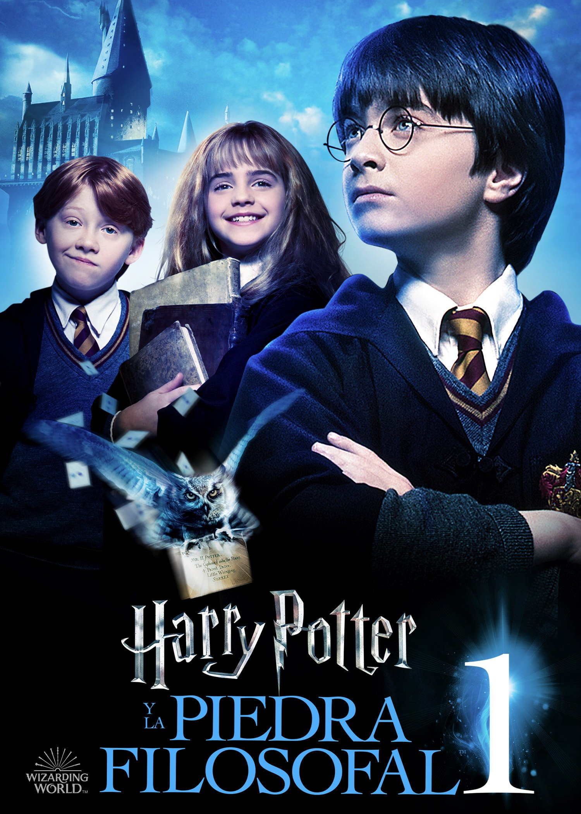
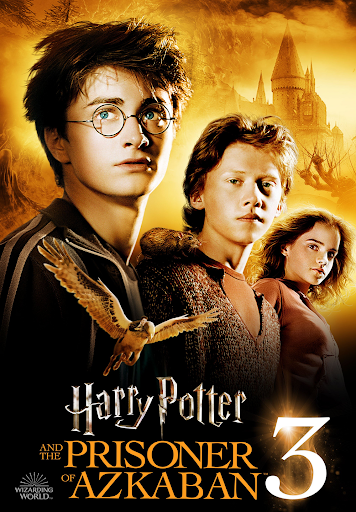
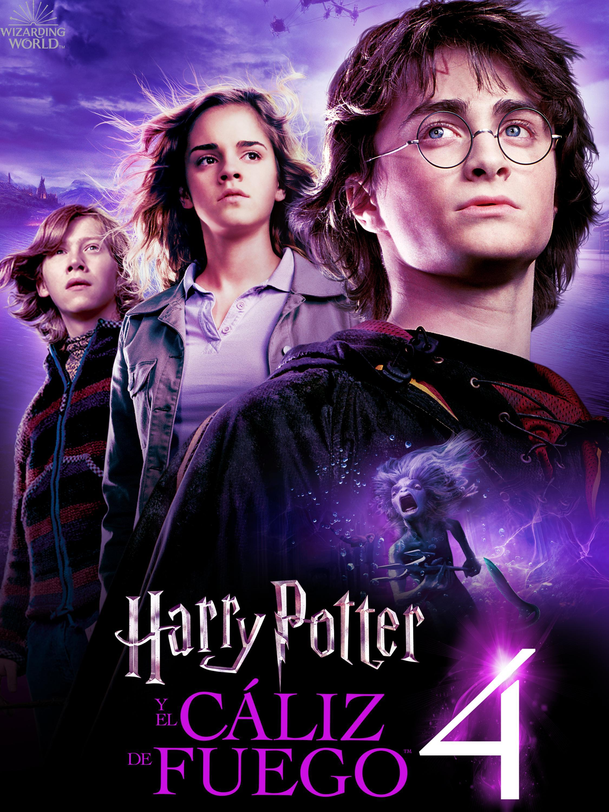
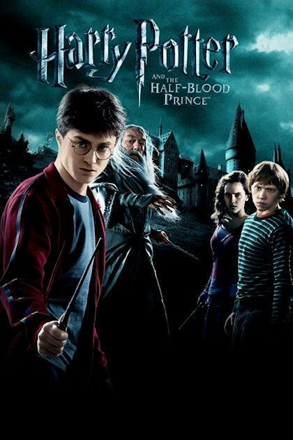
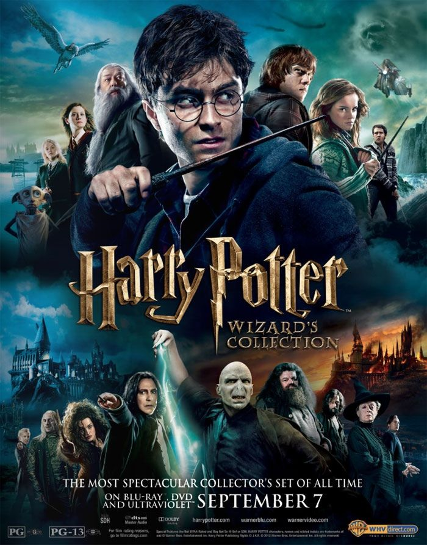

Harry Potter es una serie de novelas fantásticas escrita por la autora británica J. K. Rowling, en la que se describen las aventuras del joven aprendiz de magia y hechicería Harry Potter y sus amigos Hermione Granger y Ron Weasley, durante los años que pasan en el Colegio Hogwarts de Magia y Hechicería. El argumento se centra en la lucha entre Harry Potter y el malvado mago Lord Voldemort, quien asesinó a los padres de Harry en su afán de conquistar el mundo mágico.
La historia comienza con la celebración del mundo mágico. Durante muchos años, los magos habían vivido aterrorizados por el malvado mago Lord Voldemort. La noche del 31 de octubre, mató a Lily y James Potter. Sin embargo, cuando intento matar a su hijo de un año, Harry, la maldición asesina Avada Kedavra se vuelve sobre sí mismo. El cuerpo de Voldemort resulta destruido, pero él sobrevive: se convierte en algo más sutil que un fantasma, según sus propias palabras, que no está ni muerto ni vivo. Por su parte, a Harry solo le queda una cicatriz con forma de rayo en la frente que es el único remanente físico de la maldición de Voldemort. Aparte de la cicatriz, a Harry le queda una extraña conexión cerebral con Voldemort, la cual hace que Harry pueda sentir las emociones de Voldemort y hable parsel, el idioma de las serpientes. Harry es el único sobreviviente de la maldición asesina, y a raíz de la misteriosa derrota de Voldemort, el mundo mágico empieza a llamarlo como «el niño que sobrevivió». El 2 de noviembre, Rubeus Hagrid, un semi-gigante, deja a Harry con los únicos parientes que le quedan, sus crueles tíos los Dursley. Estos son su tío Vernon, su tía Petunia y Dudley, su primo malcriado. Ellos le ocultan el hecho de que es un mago y le dicen que sus padres han muerto en un accidente de coche. A Harry le castigan severamente después de cualquier comportamiento extraño. Sin embargo, la víspera de su undécimo cumpleaños, Harry tiene su primer contacto con el mundo mágico cuando recibe cartas del Colegio Hogwarts de Magia y Hechicería, las cuales eran entregadas por lechuzas, aunque su tío impide que pueda leerlas. Ya en su cumpleaños, Hagrid aparece y le dice a Harry que existe un mundo mágico, y, puesto que él es un mago, ha sido invitado a asistir al colegio Hogwarts de Magia y Hechicería.
| # | Nombre | Articulo | Pelicula |
|---|---|---|---|
| 1 | Harry Potter y la piedra filosofal | Harry Potter y la piedra filosofal (Harry Potter and the Philosopher's Stone) es el primer libro de la serie, fue publicado en Reino Unido el 26 de junio de 1997 y en español en marzo de 1999.10 Se trata de uno de los libros más vendidos de la historia, las estimaciones de sus ventas mundiales superan los 400 millones de copias. En la primavera de 2007, una primera edición firmada por Rowling fue subastada en Londres por 27 876 libras esterlinas.11 En esta primera obra se introducen la mayoría de los personajes principales de la serie, así como muchos de los lugares donde se desarrollará la acción. Se narran los primeros pasos de Harry en el mundo de la magia, así como su primer enfrentamiento con Voldemort, quien en su búsqueda de la inmortalidad quiere obtener el poder de la piedra filosofal y posee al profesor de defensa contra las artes oscuras. |  |
| 2 | Harry Potter y la cámara secreta | Harry Potter y la cámara secreta (Harry Potter and the Chamber of Secrets) fue publicado originalmente el 2 de julio de 1998, y en español en octubre de 1999.10 Muchos de los elementos del primer boceto de este libro fueron eliminados tanto por su autora como por el editor. Además, el libro tiene una importante relación temática con el sexto libro. Mucha de la información que iba a ser revelada en este tomo fue desplazada a la sexta entrega. Como consecuencia de esto, muchos de los elementos que aparecen en una forma cotidiana en La cámara secreta aparecen nuevamente en El misterio del príncipe con su verdadera relevancia.12 El libro relata el segundo año de Harry en Hogwarts. Un día un elfo doméstico llamado Dobby va a casa de Harry para avisarle de que Hogwarts corre un grave peligro. Más tarde su amigo Ron, le recogerá en un coche volador y así empieza su curso en Hogwarts durante el cual aparecen mensajes en las paredes de los pasillos de la escuela que advierten que la Cámara de los Secretos ha sido abierta, seguidos de una serie de ataques a alumnos que no provienen de familias con sangre mágica. En esta entrega introducen la figura del elfo doméstico y personajes relevantes para el resto de la serie, como Lucius Malfoy, Ginny Weasley y Arthur Weasley, además de revelar un poco más del pasado de Voldemort a través de su diario personal. | |
| 3 | Harry Potter y el prisionero de Azkaban | Harry Potter y el prisionero de Azkaban (Harry Potter and the Prisoner of Azkaban) fue publicado en inglés el 8 de julio de 1999, mientras que en español lo hizo en abril de 2000.10 Este fue el libro que más rápido escribió Rowling, pues lo terminó en tan solo un año después de comenzar a escribirlo. Fue además acreedor del Premio Costa y del Premio Bram Stoker, entre otros, que lo ubican como uno de los libros fantásticos más laureados de los últimos años.13 En esta oportunidad se introducen la figura del dementor un no ser que absorbe la alegría de las personas. J. k. Rowling se baso en la depresión para crear a los dementores. Los personajes Remus Lupin, el tímido y adorable licantrópo y Sirius Black, el temerario padrino de Harry, quien al inicio de la novela escapa de la prisión de Azkaban además de desarrollar la historia de los padres de Harry. Es el único libro de la serie en el que no aparece Voldemort. |  |
| 4 | Harry Potter y el cáliz de fuego | Harry Potter y el cáliz de fuego (Harry Potter and the Goblet of Fire) fue publicado en inglés el 8 de julio de 2000 y en español en marzo de 2001.10 El tamaño del libro incrementó considerablemente respecto a los primeros tres, una idea de la que Rowling estaba al tanto desde la concepción de la novela. El título atravesó diversas modificaciones, entre las cuales se incluyeron Harry Potter y el Torneo Doomspeell, Harry Potter y el Torneo de los tres magos, hasta que la autora se inclinó por El cáliz de fuego pues recordaba al concepto de la «copa del destino», que de acuerdo a ella era el tema del libro.14 La novela fue ganadora del Premio Hugo a la mejor novela en 2001.15 En esta ocasión, se narra el cuarto año de Harry en Hogwarts y el misterio que rodea el ingreso involuntario de su nombre en el Torneo de los Tres Magos, en el cual es obligado a competir junto a otros tres participantes. La historia explora más a fondo el mundo mágico y termina con el resurgimiento de lord Voldemort. Previo a la publicación del libro, se generó mucha controversia y anticipación ante el anuncio de la autora de que un personaje moriría. En este libro Harry y sus compañeros pasan de niños a adolescentes y se empiezan a interesar por las chicas. El ambiente de que el amor esta en el aire aumenta cuando un montón de chicas exóticas llegan a Howarts para el torneo de los tres magos |  |
| 5 | Harry Potter y la Orden del Fénix | Harry Potter y la Orden del Fénix (Harry Potter and the Order of the Phoenix) es con casi 900 páginas en su edición inglesa16 el libro más largo de la serie, un hecho que la propia autora considera un defecto.17 Fue publicado mundialmente en inglés el 21 de junio de 2003, y en español el 21 de febrero de 2004.18 La edición en español a cargo de Salamandra constó de tres versiones: una para España, otra para el cono sur y otra para Colombia, México y Estados Unidos. Esta distinción se hizo para respetar algunas particularidades del lenguaje regional.18 Su tirada inicial en español fue de 1 100 000 copias.18 En el quinto libro, Harry Potter debe enfrentarse tanto a un Voldemort resurgido como al resto del mundo mágico que se niega a creer que esto es cierto, empezando por el Ministerio de Magia. Este nombra a Dolores Umbridge como la nueva directora de Hogwarts, que junto con Luna Lovegood y Bellatrix Lestrange son los tres personajes más destacados que se introducen en esta entrega. Por otro lado, se revela una importante profecía que concierne a Harry y a Voldemort. | |
| 6 | Harry Potter y el misterio del príncipe | Harry Potter y el misterio del príncipe (Harry Potter and the Half-Blood Prince) fue publicado en inglés el 16 de julio de 2005 y fue presentado por Rowling en una rueda de prensa reservada solo a niños entre 8 y 16 años.19 Por su parte, en español fue publicado el 23 de febrero de 2006, con una tirada inicial de un millón de ejemplares.20 Casi un año antes de su publicación original, Rowling había manifestado en su sitio web oficial su voluntad de matar a otro personaje,21 por lo que se sucedieron una serie de apuestas no oficiales en las que se barajaron las posibilidades.22 En esta sexta entrega, Harry se topa con un antiguo libro de texto de pociones lleno de anotaciones y recomendaciones firmadas por el misterioso príncipe mestizo. Al mismo tiempo, recibe clases particulares por el propio director del colegio, Albus Dumbledore, que le hace conocer momentos del pasado de Voldemort, para así enseñarle lo que son los horrocruxes, objetos elementales para lograr su victoria. Al final del libro, el profesor Severus Snape, cuya lealtad estuvo en duda durante toda la serie, asesina a Dumbledore. La frase Snape kills Dumbledore (Snape mata a Dumbledore) se convirtió en un fenómeno de internet que impulsó todo tipo de videos y gráficos |  |
| 7 | Harry Potter y las reliquias de la Muerte | La séptima novela, Harry Potter y las reliquias de la Muerte (Harry Potter and the Deathly Hallows), fue publicada en inglés el 21 de julio de 2007, cerrando la serie que duró una década. En español fue publicado el 21 de febrero de 2008, con una tirada inicial de un millón y medio de ejemplares.24 El libro batió récords de venta, con más de 11 millones de copias vendidas en sus primeras 48 horas, solo en el Reino Unido y Estados Unidos. La marca anterior la tenía El misterio del príncipe.25 Esta última novela narra los acontecimientos que siguen directamente a la muerte de Dumbledore, en los que Voldemort finaliza su ascenso al poder y logra dominar el Ministerio de Magia. Harry y sus amigos deciden no asistir a su último año en Hogwarts, para salir en la búsqueda de los horrocruxes restantes. Finalmente, se lleva a cabo la batalla de Hogwarts, entre la Orden del Fénix, alumnos y profesores del colegio, por un lado, y Voldemort y los Mortífagos, por el otro. en esta novela muere Fred Weasley, Remus Lupin, Tonks y por último pero no menos importante Severus Snape. La novela finaliza con un epílogo que cuenta el futuro de los personajes supervivientes 19 años después del enfrentamiento, mostrando que cada uno de ellos ha formado sus vidas. | |
| 8 | Harry Potter y el legado maldito | La octava entrega de la serie de Harry Potter (que está dividida en dos partes) se publicó el 31 de julio de 2016. No es una novela como las anteriores, sino sencillamente el guion utilizado en la obra de teatro sobre el mismo, la cual se estrenó el 30 de julio de 2016. |  |